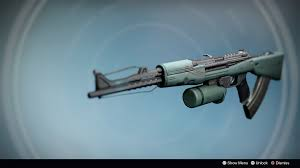

ARMAS EXOTICAS DO DESTINY1
só a nata das armas
destiny 1
é um jogo lançado em 2017
com um tema espacial e futurista
é um jogo de tiro em primeira pessoa desenvolvido pela Bungie, lançado em 2014. A narrativa se passa em um futuro distante, onde os jogadores assumem o papel de Guardiões, seres que protegem a Última Cidade da Terra. Eles são imbuídos com poderes especiais pela Luz, que é uma força misteriosa emanada da Torre, a fortaleza dos Guardiões.
ARMAS EXÓTICAS
são armas tanto de fogo quanto brancas
mas com abilidades especiais e unicas dentro do game,
e são as mais raras dentro dele
Zhalo Supercell

Zhalo Supercell - um rifle automático recuperado que foi reengenhado pela Luz de um Guardião para assumir a funcionalidade baseada em Arco(um elemento dentro do jogo). Foi a primeira arma primária não-ataque em Destiny que causou dano elemental.
Hard Light
Hard Light - uma das armas de destaque da fundição Omolon. No D1, ele utilizava "polímero líquido" para materializar balas que podiam ricochetear em superfícies e penetrar alvos. Em Destiny 2, as balas de polímero foram atualizadas para não apenas causar mais dano de ricochetes, mas também não perder seu impacto de distâncias maiores.
SUROS Regime
SUROS Regime - a arma de destaque da fundição SUROS, um rifle automático projetado a partir da tecnologia da Era Dourada. Em Destiny 2, seu "firmware" era muito eficaz no Crisol, fazendo com que Lorde Shaxx ordenasse que a SUROS o refizesse para ser menos "quebrado", de acordo com a lenda da MIDA Multi-Tool... uma quebra da quarta parede pela Bungie, referindo-se a ele como a arma mais poderosa no sandbox PvP do D1 em um ponto.
Monte Carlo
.jpeg)
originalmente projetado como uma arma de vitrine, mas suas capacidades acabaram sendo bastante eficazes em combate real. Sua lenda em Destiny 2 vem de um Caçador obscuro que adquire a arma em uma operação que deu errado, onde ele diz que não conseguiu impedir seu parceiro de ser morto pelos Caídos. Também se refere ao "Método de Monte Carlo" - um método matemático de simular fenômenos e probabilidade, e à cidade de Monte Carlo em Mônaco, conhecida como um dos maiores locais de cassino/jogos de azar do mundo.
The Last Word
.jpeg)
The Last Word - Como Thorn, a versão de Destiny 1 do TLW é uma réplica, produzida em massa pela Tex Mechanica. A variante do D2 é a arma original, forjada pela Tex Mechanica para o Caçador Rebelde Jaren Ward e passada para seu filho adotivo, Shin Malphur. Malphur a dá para o Guardião, afirmando que agora cabe a nós não apenas continuar a batalha, mas ser aquele que caminha na linha entre a Luz e a Escuridão.
Hawkmoon
.jpeg)
Hawkmoon - a origem da primeira versão do Hawkmoon permanece desconhecida. Foi reformado em Destiny 2 a partir de um fragmento do Viajante encontrado por Corvo e o Guardião, e agora é uma "Arma da Luz" - aquelas que usam energias paracausais, seja a Luz do Viajante ou do portador, seja como fonte de seu poder, ou concedendo-o em troca.